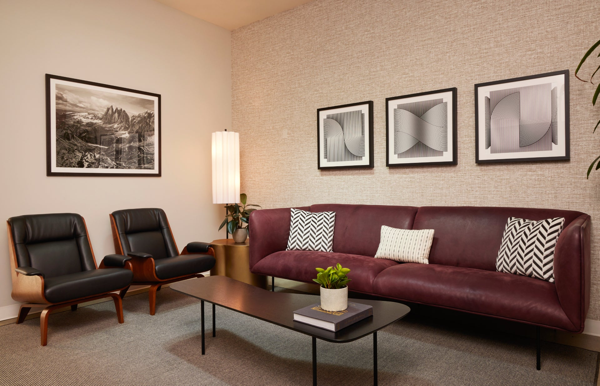
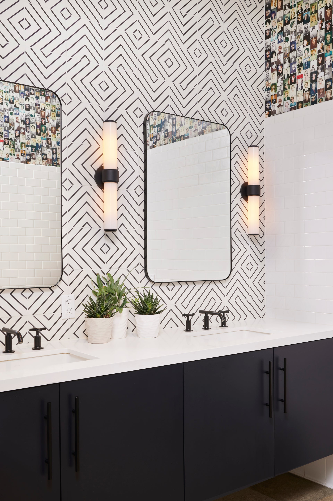

Retail interior design is one of the most commercially direct disciplines in the field. Unlike residential work, where success is measured by how well the space serves the people who live in it, retail design is measured by a harder metric: whether the space converts browsers into buyers, and whether the customer experience it creates is compelling enough to bring people back. Every design decision — the flow of the floor plan, the placement of product, the quality of the lighting, the feel of the materials underfoot — has a measurable commercial consequence.
This doesn't mean retail interiors should be purely functional and aesthetically neutral. The opposite is true. In an era where e-commerce offers infinite product selection and frictionless purchasing, physical retail survives and thrives by offering something that can't be replicated on a screen: an experience. The quality of that experience — how the space feels, what it communicates, how it makes the customer feel about the brand and about themselves — is the central design challenge of contemporary retail.
We've designed retail and showroom interiors across Los Angeles and South Florida, working with brands at different scales and in different categories. These are the principles that consistently produce spaces that perform.
Design the customer journey before designing the space
The most important piece of work in retail interior design happens before any material is selected or any elevation is drawn: mapping the customer journey. How does a customer arrive? What's their first impression when they enter? Where do they go instinctively, and where do you want them to go? How do they move through the space? Where do they slow down and engage with product? Where do they make decisions? Where do they transact? How do they exit?
Each stage of this journey is a design opportunity and a design problem to be solved. The entry experience sets the brand tone and tells the customer whether this is a space worth their time. The flow of the floor plan either guides customers through the full product range or allows them to exit without engaging. The placement of hero product — the items with the highest margin, the newest arrivals, the pieces that best represent what the brand is about — determines what customers actually see. None of this happens by accident in a well-designed retail space.
The practical tool for this work is a customer journey map overlaid on a floor plan: a diagram that traces the most likely paths through the space and identifies, at each stage, what the customer experiences and what the design needs to deliver. It's a straightforward piece of work, and it consistently surfaces design issues that would otherwise only become apparent after opening — when they're expensive to fix.
Flow and dwell time: the two variables that matter most
Retail design research consistently identifies two metrics that predict commercial performance more reliably than almost any other variable: flow (how customers move through the space) and dwell time (how long they spend in it). Customers who move through the full space and who spend more time in it buy more — predictably, measurably, consistently across retail categories.
Flow is primarily a floor plan and fixturing problem. The position of the checkout counter, the placement of gondolas and display units, the width of aisles, and the location of key product all influence the natural paths customers take through the space. A checkout counter at the rear of the store, rather than just inside the entrance, increases the average customer's exposure to product. A floor plan that creates a natural circuit — in through one side, out through another — does the same.
Dwell time is a comfort and engagement problem. Customers stay longer in spaces that feel comfortable — good lighting, appropriate temperature, seating where appropriate, a sense of spaciousness rather than crowding. They also stay longer when there's something to engage with: product that can be touched and examined, displays that tell a story, sensory experiences (scent, texture, sound) that make the space worth lingering in. The design of these engagement moments is one of the most brand-specific and highest-value aspects of custom retail interior design.

JAMM
Lighting: the highest-leverage design decision in retail
Lighting is the single most impactful variable in retail interior design, and the most consistently underinvested. The difference between a retail space with well-designed lighting and one with generic ceiling fixtures is not subtle — it's the difference between product that looks beautiful and inviting and product that looks flat and institutional. Customers make this judgement without being conscious of it, but they make it immediately and it affects every subsequent decision in the store.
Retail lighting has two jobs: ambient lighting that establishes the overall character of the space, and accent lighting that highlights specific product. The ambient lighting should be warm, comfortable, and slightly lower than the accent lighting — creating a sense of drama and directing the eye toward the product. The accent lighting needs to be directional and precise, positioned to create the light angles that make product look its best. For fashion and apparel, this typically means warm-toned light that flatters skin tones and makes colours appear vivid. For furniture and home goods, it means light that reveals texture and depth. For jewellery and accessories, it means a combination of ambient warmth and precise directional highlights.
The fixture selection matters as much as the lighting design. Fixtures that are visible and considered — pendant lights, track systems with quality heads, architectural wall washers — contribute to the overall aesthetic of the space in a way that recessed downlights do not. In a premium retail environment, the lighting fixtures are part of the brand statement, not just the delivery mechanism for lumens.
Materials and finishes: what premium actually feels like
In custom retail interiors, the quality of the materials directly communicates the quality of the brand. Customers make rapid, largely unconscious assessments of brand positioning based on the materials they encounter — the floor underfoot, the surface of the display fixtures, the finish of the walls, the texture of any textiles in the space. A brand that positions itself as premium or luxury needs materials that feel premium and luxurious, because a disconnect between the brand's self-presentation and the physical reality of the space is immediately legible to customers, even when they can't articulate why.
This doesn't necessarily mean expensive materials — it means considered materials. Polished concrete, done well, communicates a specific kind of quality: industrial, modern, considered. Natural stone communicates permanence and luxury. Warm wood communicates craft and approachability. The choice of material should be deliberate, derived from the brand's positioning and values rather than from what's available at a convenient price point. The materials palette should be tight — three or four materials used consistently throughout the space — rather than varied and eclectic, which reads as unresolved.
Durability in retail contexts also requires specific attention. Materials that look beautiful in a showroom setting but scuff, stain, or show wear in a high-traffic retail environment are not a successful design choice, regardless of their aesthetic merits. The spec process for retail finishes needs to account for the actual conditions of the space: the volume of foot traffic, the kind of products being sold, the cleaning protocols that will be in place, and the expected lifespan before a refresh is planned.

JAMM
Visual merchandising built into the design
The most effective retail interiors integrate visual merchandising into the architecture rather than treating it as a separate function applied after the fact. Display fixtures that are designed as part of the interior — built-in shelving with the right depths and heights for the actual product being sold, wall systems that allow for flexible reconfiguration as product ranges change, display surfaces at the right heights for the customer interaction they're designed to facilitate — perform better than off-the-shelf fixturing dropped into a generic space.
Hero walls — feature displays that anchor a key section of the store and showcase the most important product in the range — are one of the most effective tools in retail interior design. A well-designed hero wall creates a visual destination within the store, gives customers a clear focal point to move toward, and concentrates the brand's strongest product where it will get the most attention. The design of the hero wall — its scale, materiality, lighting, and relationship to the surrounding space — is often the single most important design decision in a retail interior.
Flexibility is also worth designing for explicitly. Retail environments change constantly — seasonal collections, new product launches, promotional periods, visual merchandising rotations — and a retail interior that can't accommodate change becomes a constraint rather than an asset. Track lighting that can be repositioned, display systems with adjustable components, and wall systems designed for reconfiguration are investments in the long-term performance of the space rather than just its opening-day appearance.
The showroom as a sales environment
For many brands — furniture, home goods, fashion with higher price points — the physical space functions less as a transactional retail environment and more as a showroom: a place where customers come to experience the brand, engage with product in a setting that reflects its intended use, and develop the relationship with the brand that eventually produces a purchase. The design requirements of a showroom are somewhat different from those of a conventional retail space.
In a showroom context, the space itself is part of the product. A furniture brand's showroom needs to demonstrate, through the quality and thoughtfulness of its own interior, that the brand knows what it's doing. The furniture needs to be shown in room-like settings rather than warehouse rows, so customers can imagine the pieces in their own homes. The lighting needs to show the furniture at its best. The overall environment needs to feel like somewhere worth spending time — not a store to pass through, but a space to inhabit for a while.
This is where the overlap between retail design and residential design becomes most productive. The skills that make a residential interior feel considered, warm, and inviting are the same skills that make a showroom feel like somewhere worth lingering. The editorial eye that selects and arranges objects in a home is the same eye that creates compelling showroom vignettes. The best showroom interiors feel, at their best, like beautiful rooms that happen to have price tags on the furniture.
If you're planning a retail fitout, showroom, or commercial interior project in Los Angeles or South Florida, we'd be glad to talk through what your space needs to do — and how a design process that takes the commercial objectives seriously can produce a result that performs as well as it looks.